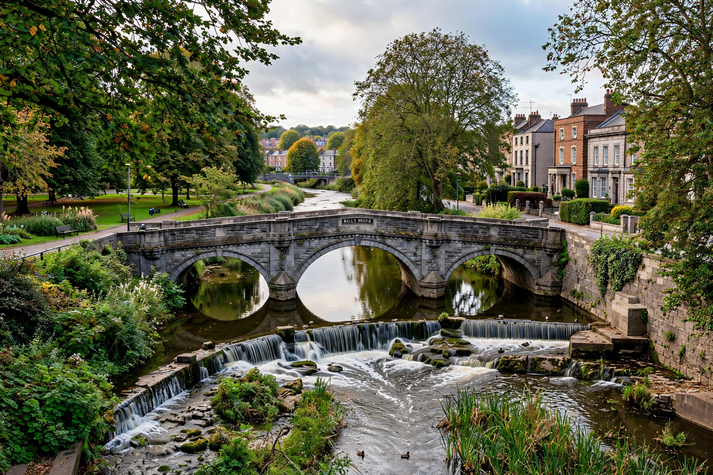

The River Dodder (Irish: An Dothra) is one of the three main rivers in Dublin, Ireland, the others being the Liffey and the Tolka. It rises in the Dublin Mountains and flows through the southern suburbs to join the Liffey at Ringsend, near the Grand Canal Dock.

From its source on Kippure, the Dodder passes through the Glenasmole valley — impounded by the Bohernabreena reservoirs, built in the 1880s to supply Rathmines — then through Tallaght, Firhouse, Rathfarnham, Milltown, Clonskeagh, Donnybrook and Ballsbridge. Its tributaries include the Owendoher, Whitechurch Stream, Little Dargle and Swan River.
The river powered many mills in earlier centuries. It is prone to flash flooding — serious floods occurred in 1986 during Hurricane Charley and in October 2011 — prompting flood alleviation works along its lower reaches. Despite urbanisation, the Dodder supports herons, kingfishers, otters, dippers and brown trout, and its greenway is a popular walking and cycling route.